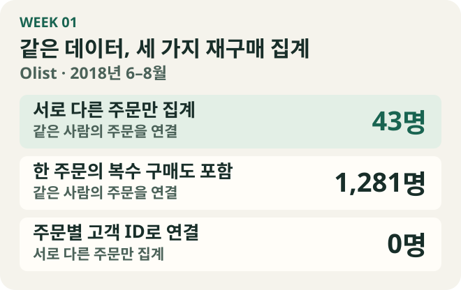

“이번 분기 신규 고객 중 30일 안에 다시 주문한 비율이 가장 높은 유입 채널은 어디일까?” 이 질문을 Olist에 옮기려고 주문 데이터의 아홉 테이블을 살폈다. 구매 고객이 어디에서 유입됐는지 보여 주는 열은 찾을 수 없었다. 별도 마케팅 데이터에 origin이 있어 확인했더니, 그 값은 판매자 후보가 들어온 경로였다.
구매 고객이 사는 주로 바꾸면 다른 분석은 가능했다. 데이터에서 확인되는 첫 주문이 2018년 2분기에 속한 19,273명 중 191명(0.99%)이 30일 안에 다시 주문했다. 다만 거주 주로 집계하면 고객이 어디에 사는지를 비교하게 된다. 유입 경로를 묻던 질문은 어떤 데이터가 필요한지 적어 탐색 기록에 남겼다.
1주차 과제는 이렇게 업무에서 받은 질문을 브라질 이커머스의 Olist 주문 데이터에 옮기고, 그 과정에서 판단이 필요했던 곳을 적는 일이었다. 지원서에서 모은 열두 문항 중 처음에는 유입 채널을 묻는 2번과 같은 상품 재구매를 묻는 1번을 골랐다. 데이터에 넣어 보고 질문별 판단을 정리한 뒤 제출 대상을 다시 골랐다.
재구매를 세기 전에 사람과 주문을 구분했다
10월 9일 공개 CSV를 SQLite에 넣고, 테이블 관계를 ERD로 그렸다. 주문은 99,441행, 주문 상품은 112,650행, 결제는 103,886행이었다. 주문 번호가 세 테이블에 있어도 한 행은 주문 한 건, 상품 한 개, 결제 한 건으로 서로 다른 것을 나타냈다. customer_id도 주문별 고객 레코드의 키였다. 한 사람이 다른 날 다시 주문한 기록을 묶을 때는 customer_unique_id를 썼다.
“같은 상품을 두 번 이상 주문한 고객은 몇 명인가?”는 키를 고른 뒤에도 ‘두 번’이 무엇인지 정해야 했다. 2018년 6~8월에 같은 사람이 별도 주문으로 다시 산 경우는 43명이었다. 한 주문 안의 여러 상품 행까지 세면 1,281명이었고, 주문별 고객 ID로 묶으면 0명이었다. 한 주문에 같은 상품을 두 개 담았을 때 상품 표에도 행이 두 개 생긴다는 점을 여기서 배웠다.

이 질문에는 재구매 상품 상위 10개도 있었다. 이 석 달의 1위 상품을 다시 산 고객은 2명이고 그 아래는 한 명씩 동률이었다. 같은 상품 재구매와 유입 채널은 탐색 기록으로 남겼다. 최종 제출본에는 수령 뒤 행동을 관찰할 수 있는 4번, 조인 중복을 수치로 확인할 수 있는 6번, 질문의 맥락이 빠졌을 때 어떻게 대응할지 다루는 7번을 담았다.
제출한 질문 1 · 상품을 받은 뒤 30일 안에 다시 주문했나
원래 질문은 퇴원 후 30일 안에 재입원한 비율이 높은 진료과를 전년과 비교하는 것이었다. Olist에 옮기면서 퇴원에 해당하는 시점을 주문한 날로 볼지, 고객이 상품을 받은 날로 볼지 정해야 했다. 상품을 받은 뒤의 행동을 묻기로 하고 수령일을 시작점으로 잡았다. 진료과는 상품 카테고리로 바꿨다.
2018년 3~8월 동안 상품을 받은 고객 중 30일 이내 재주문한 비율이 높은 상품 카테고리는? 2017년 같은 기간과 비교하면?
이렇게 쓰니 질문에서 먼저 필요한 데이터가 보였다. 상품을 받은 주문과 후속 주문을 같은 고객으로 연결해야 했고, 전년과 비교하려면 두 해 모두 수령 뒤 30일을 관찰할 수 있어야 했다. 제출 당시의 수령 기간은 3~8월이었고, 관찰 기간을 어디까지 확보할 수 있는지는 이후 문항을 보완하며 다시 다뤘다.
제출한 질문 2 · 신규 고객과 기존 고객은 각각 얼마를 결제했나
원래 질문은 여러 경로로 테이블을 연결할 때 행이 부풀려지지 않았는지 확인해 달라는 것이었다. 처음에는 카테고리별 결제액을 생각했다. 주문 상품과 결제는 각각 주문 한 건에 여러 행이 생길 수 있었다. 가령 상품 3행과 결제 2행을 주문 번호로 연결하면 6행이 되고, 결제액을 바로 더하면 결제 한 건을 세 번 센다. 실제 Olist에서도 이 조인으로 전체 결제 합계가 약 27% 커졌다.
한 주문에 여러 카테고리가 담긴 786건의 결제액을 나누려면 배분 기준도 필요했다. 제출본에서는 결제액의 비교 대상을 신규와 기존 고객으로 잡았다. 이때의 질문은 다음과 같았다.
2018년 1분기 신규 고객과 기존 고객의 총 결제 금액을 구하는 질문에서, 행이 부풀려지지 않았는지 확인하고 답해줘.
1월에 처음 구매한 고객이 3월에 다시 결제하면 그 돈은 어느 쪽에 넣어야 할까? 분기 기준으로는 그 고객이 1분기에 새로 들어왔으므로 3월 결제도 신규 그룹에 넣기로 했다. 이 질문을 쓰면서 고객을 분류하는 데 필요한 구매 이력과 결제액을 합산할 기간을 따로 생각하게 됐다.
제출한 질문 3 · 발송 기한을 넘긴 주문에서 무엇을 놓쳤나
“내가 놓친 부분이 뭐가 있지?”라는 질문에는 상황이 빠져 있었다. Olist에서 확인할 수 있는 상황을 붙여, 판매자가 발송 기한을 넘긴 주문이 많아 고객이 서비스를 떠나는 것 같다는 전제에서 무엇을 더 봐야 할지 물었다.
탐색에서는 기한을 넘긴 주문의 평점 1~2점 비율이 24.40%, 기한을 지킨 주문은 12.32%였다. 이후 재주문 비율은 각각 3.15%와 3.06%였다. 두 지표가 같은 방향의 이야기를 해 주지는 않았다. 질문을 더 구체화하려면 무엇을 고객 이탈로 볼지, 누가 어떤 결정을 하려고 묻는지부터 확인해야 했다. 부족한 정보가 있으면 되묻는 것도 질문을 다루는 과정에 포함된다는 걸 배웠다.
질문을 만들며 배운 기준을 학습지에 정리했다
10월 13일 첫 회의에서 팀은 SQL 생성부터 평가하고, 업무 용어와 계산 기준을 정의하는 시맨틱 레이어는 그다음에 다루기로 했다. 나도 사전 과제에서 ‘재주문’, ‘신규 고객’, ‘이탈’을 데이터에 옮기며 정한 기준을 시맨틱 레이어 공부와 연결했다.
개념은 입문 용어 가이드에 두고, 일곱 장짜리 학습지에는 직접 확인할 실습을 넣었다. Olist 테이블을 둘러보고 조인한 뒤 행 수와 합계가 어떻게 달라지는지 확인하는 데서 출발했다. 뒷부분에는 LLM에 스키마를 주는 방법, 에이전트가 실행 결과를 점검하는 방법, 질문과 정답 SQL로 평가셋을 만드는 방법을 정리했다. 마지막 장에서는 온톨로지·MCP·플러그인의 역할을 그림으로 정리했다.
Olist에서 답할 수 있는 질문을 고르고 나니, 그 질문을 읽은 모델도 내가 정한 기준대로 셀지가 남았다. 다음 주에는 그 차이를 확인할 수 있도록 질문을 팀 JSON 양식으로 옮기고, 정답 SQL과 검산 결과를 붙였다.